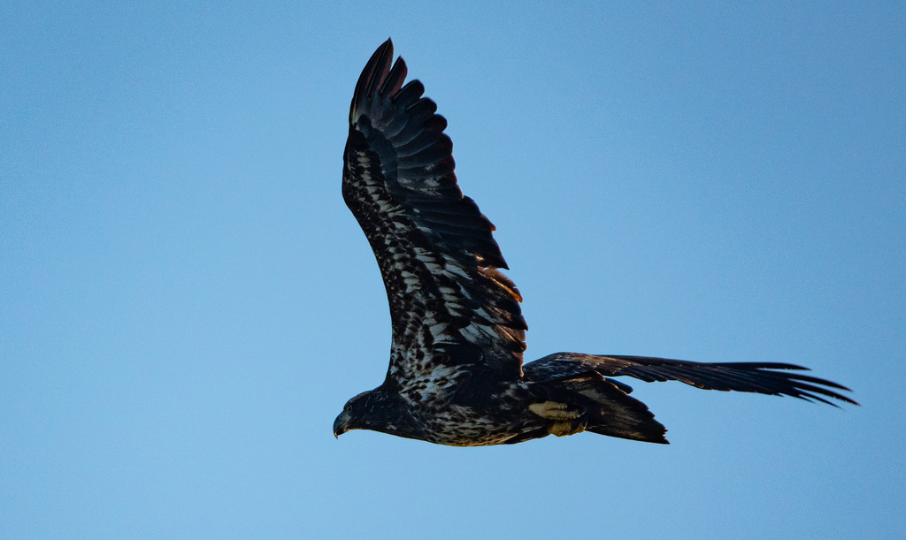

- The bald eagle is the national bird of the United States — a huge raptor with a snow-white head and tail, dark body, and bright yellow bill.
- Florida has one of the densest concentrations of nesting bald eagles in the lower 48 states, with an estimated 1,500 nesting pairs — making it one of the great strongholds for this iconic species.
- The world-record largest tree nest ever documented — for any animal species — belonged to a pair of bald eagles just down the road in St. Petersburg, Florida. It measured 9.5 feet wide, 20 feet deep, and weighed almost 6,000 pounds.
- It is not actually bald; the name comes from an old word meaning white-headed, and juvenile eagles are completely chocolate brown and mottled with white — they require four to five years to acquire their definitive adult plumage.
Massive dark brown body with an unmistakable white head and tail; the heavy hooked bill, eyes, and powerful legs are all brilliant yellow.
No white head — instead a large, dark brown bird with mottled white on the underwings and belly. Often confused with a Golden Eagle, which is exceptionally rare in Florida.
Very large, with broad, plank-like wings held flat — unlike the turkey vulture, which tilts its wings in a shallow V.
A surprisingly weak, high, chattering or whistling call — far less dramatic than the screams Hollywood usually dubs over eagle footage (those are often a red-tailed hawk).
A big dark raptor with a brilliant white head and tail, perched in a tall tree near water or soaring on flat wings. An all-brown bird of similar size with white mottling is likely a young bald eagle. If the wings tilt in a V-shape, look again — that's probably a turkey vulture.
Mainly fish, plus waterbirds, small mammals, and carrion. Often steals catches from ospreys and other birds.
Overhead or perched high in a large tree near water. A genuine thrill when it happens, but an occasional visitor rather than an everyday sight.
Present in Florida year-round, but Florida's breeding schedule is the reverse of northern populations. Eagles return to local territories in October, with egg-laying peaking between December and early January and young fledging by May. Most breeding adults — especially in the southern peninsula — stay in Florida year-round; it is subadults and non-breeding birds that head north for summer. Late fall through spring is the best window for a park sighting.
Enjoy from a distance and never disturb a nest. Bald eagles, their active nests, and their nest trees are strictly protected under the federal Bald and Golden Eagle Protection Act — approaching a nest can carry real legal penalties as well as harming the birds. Maintain at least 330 feet from any nesting area and use binoculars or a zoom lens. Local nests are monitored by volunteer citizen scientists through Audubon Florida's EagleWatch program.
- © Rob Carr (CC-BY-NC), via iNaturalist